<!DOCTYPE html>
<html xmlns="http://www.w3.org/1999/xhtml" lang="en"></html>
  <head>
    <meta charset="utf-8" />
    <meta name="viewport" content="width=device-width, initial-scale=1.0" />
<title>Mësimi 5 –Leximi i të dhënave nga sensori &#8212; Programimi i një pajisje Micro:bit në MakeCode </title>
    <link rel="stylesheet" href="_static/pygments.css" type="text/css" />
    <link rel="stylesheet" href="_static/basic.css" type="text/css" />
    <link rel="stylesheet" type="text/css" href="_static/activecode.css" />
    <link rel="stylesheet" type="text/css" href="_static/codemirror.css" />
    <link rel="stylesheet" type="text/css" href="_static/clickable.css" />
    <link rel="stylesheet" type="text/css" href="_static/pytutor.css" />
    <link rel="stylesheet" type="text/css" href="_static/modal-basic.css" />
    <link rel="stylesheet" type="text/css" href="_static/datafile.css" />
    <link rel="stylesheet" type="text/css" href="_static/dragndrop.css" />
    <link rel="stylesheet" type="text/css" href="_static/fitb.css" />
    <link rel="stylesheet" type="text/css" href="_static/matrixeq.css" />
    <link rel="stylesheet" type="text/css" href="_static/parsons.css" />
    <link rel="stylesheet" type="text/css" href="_static/lib/prettify.css" />
    <link rel="stylesheet" type="text/css" href="_static/poll.css" />
    <link rel="stylesheet" type="text/css" href="_static/showEval.css" />
    <link rel="stylesheet" type="text/css" href="_static/tabbedstuff.css" />
    <link rel="stylesheet" type="text/css" href="https://stackpath.bootstrapcdn.com/bootstrap/4.2.1/css/bootstrap.min.css" />
    <link rel="stylesheet" type="text/css" href="_static/video.css" />
    <link rel="stylesheet" type="text/css" href="_static/webgldemo.css" />
    <link rel="stylesheet" type="text/css" href="_static/webglinteractive.css" />
    <link rel="stylesheet" type="text/css" href="_static/karel.css" />
    <link rel="stylesheet" type="text/css" href="_static/notes.css" />
    <link rel="stylesheet" type="text/css" href="_static/simanim.css" />
    <link rel="stylesheet" type="text/css" href="_static/pycode.css" />
    <link rel="stylesheet" type="text/css" href="_static/p5js.css" />
    <link rel="stylesheet" type="text/css" href="_static/gallery.css" />
    <link rel="stylesheet" type="text/css" href="_static/dbDirective.css" />
    <link rel="stylesheet" href="_static/user-highlights.css" type="text/css" />
    <link rel="stylesheet" href="https://use.fontawesome.com/releases/v5.1.1/css/all.css" type="text/css" />
    <link rel="stylesheet" href="_static/bootstrap-4.0.0-dist/css/bootstrap.min.css" type="text/css" />
    <link rel="stylesheet" href="_static/flatly.min.css" type="text/css" />
    <link rel="stylesheet" href="_static/petlja-runestone.css" type="text/css" />
    <link rel="stylesheet" href="_staticnbstyle.css" type="text/css" />
    <script id="documentation_options" data-url_root="./" src="_static/documentation_options.js"></script>
    <script type="text/javascript" src="_static/runestonebase.js"></script>
    <script type="text/javascript" src="_static/skulpt-stdlib.js"></script>
    <script type="text/javascript" src="_static/skulpt.min.js"></script>
    <script type="text/javascript" src="_static/jquery.js"></script>
    <script type="text/javascript" src="_static/underscore.js"></script>
    <script type="text/javascript" src="_static/doctools.js"></script>
    <script type="text/javascript" src="_static/language_data.js"></script>
    <script type="text/javascript" src="_static/jquery.highlight.js"></script>
    <script type="text/javascript" src="_static/bookfuncs.js"></script>
    <script type="text/javascript" src="_static/codemirror.js"></script>
    <script type="text/javascript" src="_static/xml.js"></script>
    <script type="text/javascript" src="_static/css.js"></script>
    <script type="text/javascript" src="_static/python.js"></script>
    <script type="text/javascript" src="_static/htmlmixed.js"></script>
    <script type="text/javascript" src="_static/javascript.js"></script>
    <script type="text/javascript" src="_static/jquery_i18n/CLDRPluralRuleParser.js"></script>
    <script type="text/javascript" src="_static/jquery_i18n/jquery.i18n.js"></script>
    <script type="text/javascript" src="_static/jquery_i18n/jquery.i18n.messagestore.js"></script>
    <script type="text/javascript" src="_static/jquery_i18n/jquery.i18n.fallbacks.js"></script>
    <script type="text/javascript" src="_static/jquery_i18n/jquery.i18n.language.js"></script>
    <script type="text/javascript" src="_static/jquery_i18n/jquery.i18n.parser.js"></script>
    <script type="text/javascript" src="_static/jquery_i18n/jquery.i18n.emitter.js"></script>
    <script type="text/javascript" src="_static/jquery_i18n/jquery.i18n.emitter.bidi.js"></script>
    <script type="text/javascript" src="_static/activecode-i18n.en.js"></script>
    <script type="text/javascript" src="_static/activecode.js"></script>
    <script type="text/javascript" src="_static/clike.js"></script>
    <script type="text/javascript" src="_static/timed_activecode.js"></script>
    <script type="text/javascript" src="_static/animationbase.js"></script>
    <script type="text/javascript" src="_static/mchoice.js"></script>
    <script type="text/javascript" src="_static/timedmc.js"></script>
    <script type="text/javascript" src="_static/timed.js"></script>
    <script type="text/javascript" src="_static/mchoice-i18n.en.js"></script>
    <script type="text/javascript" src="_static/clickable.js"></script>
    <script type="text/javascript" src="_static/timedclickable.js"></script>
    <script type="text/javascript" src="_static/d3.v2.min.js"></script>
    <script type="text/javascript" src="_static/jquery.ba-bbq.min.js"></script>
    <script type="text/javascript" src="_static/jquery.jsPlumb-1.3.10-all-min.js"></script>
    <script type="text/javascript" src="_static/pytutor.js"></script>
    <script type="text/javascript" src="_static/codelens.js"></script>
    <script type="text/javascript" src="_static/skulpt.min.js"></script>
    <script type="text/javascript" src="_static/skulpt-stdlib.js"></script>
    <script type="text/javascript" src="_static/datafile.js"></script>
    <script type="text/javascript" src="_static/dragndrop.js"></script>
    <script type="text/javascript" src="_static/timeddnd.js"></script>
    <script type="text/javascript" src="_static/dragndrop-i18n.en.js"></script>
    <script type="text/javascript" src="_static/fitb.js"></script>
    <script type="text/javascript" src="_static/timedfitb.js"></script>
    <script type="text/javascript" src="_static/fitb-i18n.en.js"></script>
    <script type="text/javascript" src="_static/matrixeq.js"></script>
    <script type="text/javascript" src="_static/lib/prettify.js"></script>
    <script type="text/javascript" src="_static/lib/hammer.min.js"></script>
    <script type="text/javascript" src="_static/parsons.js"></script>
    <script type="text/javascript" src="_static/parsons-i18n.en.js"></script>
    <script type="text/javascript" src="_static/timedparsons.js"></script>
    <script type="text/javascript" src="_static/poll.js"></script>
    <script type="text/javascript" src="_static/reveal.js"></script>
    <script type="text/javascript" src="_static/shortanswer.js"></script>
    <script type="text/javascript" src="_static/timed_shortanswer.js"></script>
    <script type="text/javascript" src="_static/showEval.js"></script>
    <script type="text/javascript" src="_static/tabbedstuff.js"></script>
    <script type="text/javascript" src="_static/runestonevideo.js"></script>
    <script type="text/javascript" src="_static/webglinteractive.js"></script>
    <script type="text/javascript" src="_static/FileSaver.min.js"></script>
    <script type="text/javascript" src="_static/Blob.js"></script>
    <script type="text/javascript" src="_static/karelCorner.js"></script>
    <script type="text/javascript" src="_static/karelRobot.js"></script>
    <script type="text/javascript" src="_static/karelWorld.js"></script>
    <script type="text/javascript" src="_static/karelRobotDrawer.js"></script>
    <script type="text/javascript" src="_static/karelUI.js"></script>
    <script type="text/javascript" src="_static/karel.js"></script>
    <script type="text/javascript" src="_static/karel-i18n.en.js"></script>
    <script type="text/javascript" src="_static/notes.js"></script>
    <script type="text/javascript" src="_static/pygamelib-init.js"></script>
    <script type="text/javascript" src="_static/blockly/blockly_compressed.js"></script>
    <script type="text/javascript" src="_static/blockly/blocks_compressed.js"></script>
    <script type="text/javascript" src="_static/blockly/python_compressed.js"></script>
    <script type="text/javascript" src="_static/blockly/msg-sr.js"></script>
    <script type="text/javascript" src="_static/blockpy/utilities.js"></script>
    <script type="text/javascript" src="_static/blockpy/python_errors.js"></script>
    <script type="text/javascript" src="_static/blockpy/ast_node_visitor.js"></script>
    <script type="text/javascript" src="_static/blockpy/abstract_interpreter.js"></script>
    <script type="text/javascript" src="_static/blockpy/pytifa.js"></script>
    <script type="text/javascript" src="_static/blockpy/abstract_interpreter_definitions.js"></script>
    <script type="text/javascript" src="_static/blockpy/python_to_blockly.js"></script>
    <script type="text/javascript" src="_static/blockpy/imported.js"></script>
    <script type="text/javascript" src="_static/blockpy/blocks/class.js"></script>
    <script type="text/javascript" src="_static/blockpy/blocks/comment.js"></script>
    <script type="text/javascript" src="_static/blockpy/blocks/comprehensions.js"></script>
    <script type="text/javascript" src="_static/blockpy/blocks/dict.js"></script>
    <script type="text/javascript" src="_static/blockpy/blocks/if.js"></script>
    <script type="text/javascript" src="_static/blockpy/blocks/io.js"></script>
    <script type="text/javascript" src="_static/blockpy/blocks/lists.js"></script>
    <script type="text/javascript" src="_static/blockpy/blocks/sets.js"></script>
    <script type="text/javascript" src="_static/blockpy/blocks/loops.js"></script>
    <script type="text/javascript" src="_static/blockpy/blocks/parking.js"></script>
    <script type="text/javascript" src="_static/blockpy/blocks/tuple.js"></script>
    <script type="text/javascript" src="_static/blockpy/blocks/turtles.js"></script>
    <script type="text/javascript" src="_static/blockpy/blocks/text.js"></script>
    <script type="text/javascript" src="_static/blockpy-modal.js"></script>
    <script type="text/javascript" src="_static/simanim.js"></script>
    <script type="text/javascript" src="https://cdn.jsdelivr.net/pyodide/v0.16.1/full/pyodide.js"></script>
    <script type="text/javascript" src="_static/pycode.js"></script>
    <script type="text/javascript" src="//toolness.github.io/p5.js-widget/p5-widget.js"></script>
    <script type="text/javascript" src="_static/p5js.js"></script>
    <script type="text/javascript" src="_static/gallery.js"></script>
    <script type="text/javascript" src="_static/dbDirective.js"></script>
    <script type="text/javascript" src="_static/sql.js"></script>
    <script type="text/javascript" src="_static/mchoice-i18n.sr-Cyrl.js"></script>
    <script type="text/javascript" src="_static/mchoice-i18n.sr.js"></script>
    <script type="text/javascript" src="_static/mchoice-i18n.sr-Latn.js"></script>
    <script type="text/javascript" src="_static/dragndrop-i18n.sr-Cyrl.js"></script>
    <script type="text/javascript" src="_static/dragndrop-i18n.sr.js"></script>
    <script type="text/javascript" src="_static/dragndrop-i18n.sr-Latn.js"></script>
    <script type="text/javascript" src="_static/fitb-i18n.sr-Cyrl.js"></script>
    <script type="text/javascript" src="_static/fitb-i18n.sr.js"></script>
    <script type="text/javascript" src="_static/fitb-i18n.sr-Latn.js"></script>
    <script type="text/javascript" src="_static/parsons-i18n.sr-Cyrl.js"></script>
    <script type="text/javascript" src="_static/parsons-i18n.sr.js"></script>
    <script type="text/javascript" src="_static/parsons-i18n.sr-Latn.js"></script>
    <script type="text/javascript" src="_static/activecode-i18n.sr-Cyrl.js"></script>
    <script type="text/javascript" src="_static/activecode-i18n.sr.js"></script>
    <script type="text/javascript" src="_static/activecode-i18n.sr-Latn.js"></script>
    <script type="text/javascript" src="_static/jquery-ui-1.10.3.custom.min.js"></script>
    <script type="text/javascript" src="_static/jquery-fix.js"></script>
    <script type="text/javascript" src="_static/bootstrap-4.0.0-dist/js/bootstrap.min.js"></script>
    <script type="text/javascript" src="_static/bootstrap-4.0.0-dist/js/bootstrap.bundle.min.js"></script>
    <script type="text/javascript" src="_static/bootstrap-sphinx.js"></script>
    <script type="text/javascript" src="_static/waypoints.min.js"></script>
    <script type="text/javascript" src="_static/rangy-core.js"></script>
    <script type="text/javascript" src="_static/rangy-textrange.js"></script>
    <script type="text/javascript" src="_static/rangy-cssclassapplier.js"></script>
    <script type="text/javascript" src="_static/user-highlights.js"></script>
    <script type="text/javascript" src="_static/jquery.idle-timer.js"></script>
    <script type="text/javascript" src="_static/processing-1.4.1.min.js"></script>
    <script type="text/javascript" src="_static/jquery.hotkey.js"></script>
    <script type="text/javascript" src="_static/jquery-migrate-1.2.1.min.js"></script>
    <script type="text/javascript" src="_static/require.js"></script>
    <link rel="index" title="Index" href="genindex.html" />
    <link rel="search" title="Search" href="search.html" />
    <link rel="next" title="Mësimi 6 –Kontrolli i diodave LED të ekranit" href="Mësimi 6 –Kontrolli i diodave LED të ekranit.html" />
    <link rel="prev" title="Mësimi 4 –Ushtrimorja" href="Mësimi 4 –Ushtrimorja.html" />
<meta charset='utf-8'>
<meta http-equiv='X-UA-Compatible' content='IE=edge,chrome=1'>
<meta content='width=device-width, initial-scale=1.0, maximum-scale=1.0, user-scalable=0' name='viewport' />
<link rel="shortcut icon" href="_static/favicon.ico" type="image/ico" />

<script type="text/javascript">
  eBookConfig = {};
  eBookConfig.host = 'http://127.0.0.1:8000' ? 'http://127.0.0.1:8000' : 'http://127.0.0.1:8000';
  eBookConfig.app = eBookConfig.host + '/runestone';
  eBookConfig.ajaxURL = eBookConfig.app + '/ajax/';
  eBookConfig.course = 'Programimi i një pajisje Micro:bit në MakeCode ';
  eBookConfig.logLevel = '0';
  eBookConfig.loginRequired = 'false';
  eBookConfig.build_info = "";
  eBookConfig.isLoggedIn = false;
  eBookConfig.useRunestoneServices = 'false';
  eBookConfig.python3 = 'true';
  eBookConfig.basecourse = 'Programimi i një pajisje Micro:bit në MakeCode ';
  eBookConfig.runestone_version = '';
  eBookConfig.imagesDir = '_images/';
  eBookConfig.staticDir = '_static/';
  if(typeof(Sk) != "undefined")
      Sk.imgPath = eBookConfig.imagesDir;
</script>

<div id="fb-root"></div>


  </head><body>


<!-- Begin navbar -->

<nav id="navbar" class="navbar navbar-default navbar-fixed-top" role="navigation">

  <div class="container">

    <div class="navbar-header">
      <button type="button" class="navbar-toggle collapsed" data-toggle="collapse" data-target="#bs-example-navbar-collapse-1">
        <span class="sr-only">Toggle navigation</span>
        <span class="icon-bar"></span>
        <span class="icon-bar"></span>
        <span class="icon-bar"></span>
      </button>
      
    </div>

    <div class="collapse navbar-collapse" id="bs-example-navbar-collapse-1" style="margin-top: 10px; margin-left: 25px;">
      <ul class="nav navbar-nav">
        <li class="active"><a href="./">Programimi i një pajisje Micro:bit në MakeCode </a></li>
      </ul>
    </div>
  </div>
</nav>


<div class="container col-md-12" id="continue-reading"></div>

<div class="container col-md-8 col-md-offset-2" id="main-content" style="margin-top: 70px;">
  
  <div class="section" id="mesimi-5-leximi-i-te-dhenave-nga-sensori">
<h1>Mësimi 5 –Leximi i të dhënave nga sensori<a class="headerlink" href="#mesimi-5-leximi-i-te-dhenave-nga-sensori" title="Permalink to this headline">¶</a></h1>
<p>Në këtë mësim do të flasim për: ¬</p>
<ul class="simple">
<li><p>blloqet për leximin e të dhënave nga sensori;</p></li>
<li><p>blloqet për ruajtjen e të dhënave nga sensori.</p></li>
</ul>
<p>Pasi e kemi krijuar programin tonë të parë dhe e kemi nisur në Micro:bit, tani mund të krijojmë programin me të cilin do të përdorim njërin nga funksionet e Micro:bit-it si mjet hyrës. Më saktësisht, Micro:bit-i kryen veprime të caktuara në bazë të informatave që merr nga përdoruesit ose rrethi (mënyra e aktivizimit të programit).</p>
<p>Kategoria <em>Input</em> përmban komanda të cilat e aktivizojnë një program të caktuar në bazë të informatave që pajisja Micro:bit merr nga përdoruesi ose rrethi pas shtypjes së butonit A, B ose A+B, si dhe sensorët për ndriçim, temperaturë, akcelometër.</p>
<p>Niveli i ndriçimit në dhomë paraqitet me shtypjen e butonit А, ndërsa temperatura në celsius paraqitet me shtypjen e butonit B.</p>
<p><strong>Faza 1</strong></p>
<p>Të menduarit e problemit: Kur përdoruesi shtyp butonin A, programi paraqet nivelin e ndriçimit dhe temperaturën - kur shtyp butonin B.</p>
<blockquote>
<div><ul class="simple">
<li><p><strong>Hapi 1</strong>: Shtypni butonin A</p></li>
<li><p><strong>Hapi 2</strong>: Tregoni leximin momental të nivelit të ndriçimit në dhomë</p></li>
<li><p><strong>Hapi 3</strong>: Shtypni butonin B</p></li>
<li><p><strong>Hapi 4</strong>: Tregoni leximin momental të temperaturës në dhomë</p></li>
</ul>
</div></blockquote>
<p><strong>Faza 2</strong></p>
<p>Hapni MakeCode për t’i zgjedhur dhe renditur blloqet në hapësirën për programim.</p>
<p>Në faqen e internetit në <a class="reference external" href="https://makecode.microbit.org">https://makecode.microbit.org</a> filloni një projekt të ri duke klikuar në butonin <em>New Project</em> <a class="reference internal" href="_images/86.png"></a>.</p>
<p>Për të mundësuar pranimin e informatës së përdoruesit nga Micro:bit-i, pasi përdoruesi të shtypë butonin A, nga kategoria <em>Input</em> zgjedhim dhe tërheqim në hapësirën programuese bllokun:<a class="reference internal" href="_images/87.png">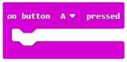</a>. Nga lista rënëse zgjedhim butonin A.</p>
<p>Për ta paraqitur nivelin e ndriçimit në dhomë fillimisht duhet ta tërheqim në bllokun e sipërm bllokun <a class="reference internal" href="_images/88.png"></a> nga kategoria <em>Basic</em>, nga kategoria Basic, i cili përdoret për paraqitjen e vlerave numerike. Këtë bllok e shfrytëzojmë për paraqitje pasi niveli momental i ndriçimit në dhomë paraqitet nga 0 deri në 255, ku 0 paraqet errësirën në dhomë, ndërsa 255 paraqet ndriçim të fortë.</p>
<p>Si duket kodi:</p>
<a class="reference internal image-reference" href="_images/89.png">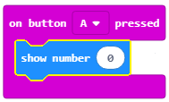</a>
<p>Vlera e nivelit të ndriçimit në dhomë “ruhet” në bllok <a class="reference internal" href="_images/90.png">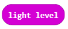</a>. Ne e tërheqim këtë bllok në fushën e bllokut <a class="reference internal" href="_images/88.png"></a> , të caktuar për vlerën numerike. Ju rikujtojmë edhe një herë, blloku <a class="reference internal" href="_images/90.png"></a> e ruan vlerën e lexuar nga sensori i ndriçimit i cili, në fakt, është një ekran (display) i Micro:bit-it (rrjeti i diodave LED në ekranin e Micro:bit-it paraqet sensorin e dritës).</p>
<p>Si duket kodi në fund:</p>
<a class="reference internal image-reference" href="_images/91.png">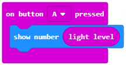</a>
<p>Për të mundësuar që Micro:bit-i ta pranojë informatën nga përdoruesi, pasi përdoruesi të shtypë butonin A, nga kategoria Input zgjedhim dhe tërheqim në hapësirën e programimit bllokun:<a class="reference internal" href="_images/87.png"></a>.</p>
<p>Nga lista rënëse zgjedhim butonin B. Për të paraqitur temperaturat në dhomë fillimisht duhet ta tërheqim në bllokun e sipërm bllokun <a class="reference internal" href="_images/88.png"></a> nga kategoria Basic, i cili përdoret për paraqitjen e vlerave numerike.</p>
<p>Si duket kodi:</p>
<a class="reference internal image-reference" href="_images/92.png">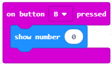</a>
<p>Vlera e temperaturës momentale në dhomë “ruhet” në bllokun <a class="reference internal" href="_images/93.png">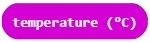</a>. Këtë bllok e tërheqim në fushën e bllokut <a class="reference internal" href="_images/88.png"></a> të caktuar për vlerën numerike.</p>
<p>Blloku <a class="reference internal" href="_images/93.png"></a> e ruan vlerën e lexuar të sensorit për temperaturën e mikroprocesorit të Micro:bit-it, pasi nuk ekziston një sensor i veçantë për temperaturë i instaluar në Micro:bit. Vlera e lexuar nga sensori paraqitet në celsius.</p>
<p>Si duket pjesa e kryer e kodit:</p>
<a class="reference internal image-reference" href="_images/94.png">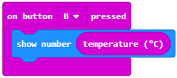</a>
<p>Si duket programi në fund:</p>
<a class="reference internal image-reference" href="_images/95.png">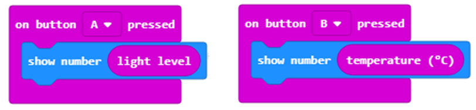</a>
<p><strong>Faza 3</strong></p>
<p>Testimi dhe analiza e programit.</p>
<p>Për ta testuar programin kemi dy mundësi:</p>
<blockquote>
<div><ol class="arabic simple">
<li><p>ta nisim në simulator duke klikuar butonin <a class="reference internal" href="_images/96.png"></a>.</p></li>
<li><p>ta kalojmë në Micro:bit. Për ta kaluar programin në Micro:bit duhet ta lidhim me një kompjuter me kabllo USB. Pasi të klikoni butonin <a class="reference internal" href="_images/97.png"></a> shkarkoni skedarin .hex në kompjuterin tuaj. Duke e tërhequr skedarin në Micro:bit, pajisja është gati për të punuar.</p></li>
</ol>
</div></blockquote>
<p>Programin mund ta kontrolloni edhe në simulues:</p>
<a class="reference internal image-reference" href="_images/98.png">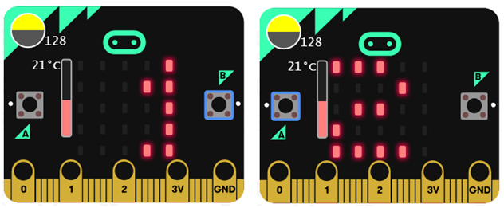</a>

    <div class="course-box course-box-info">
        <div class="course-content">
            <p>
<dl class="simple">
<dt><strong>Çfarë mësuam?</strong></dt><dd><ul class="simple">
<li><p>blloqet për leximin dhe paraqitjen e gjendjes së sensorëve janë në kategorinë  <a class="reference internal" href="_images/101.png"></a>.</p></li>
<li><p>blloku <a class="reference internal" href="_images/90.png"></a> ruan vlerën e lexuar nga sensori për ndriçim;</p></li>
<li><p>niveli i ndriçimit paraqitet si vlerë numerike nga 0 deri në 255, ku 0 paraqet errësirën në dhomë, ndërsa 255 paraqet ndriçim të fortë;</p></li>
<li><p>blloku <a class="reference internal" href="_images/93.png"></a> ruan vlerën e lexuar nga sensori për temperaturën e procesorit të Micro:bit-it;</p></li>
<li><p>temperatura matet me gradë celsius;</p></li>
<li><p>blloku  <a class="reference internal" href="_images/99.png"></a> ruan përshpejtimin kur Micro:bit-i lëviz në drejtimin majtas ose djathtas (x), kur Micro:bit-i lëviz para-prapa (y), kur Micro:bit-i lëviz lart e poshtë (z), ose ruan përshpejtimin në të tri dimensionet (drejtimet) (strength).</p></li>
</ul>
</dd>
</dl>

    </p></div></div>
<div class="section" id="test">
<h2>Test<a class="headerlink" href="#test" title="Permalink to this headline">¶</a></h2>

            <div class="course-box course-box-question course-content">
            <ul data-component="multiplechoice" data-multipleanswers="false"  id="L5P1">
            <p>Q-37: Çfarë do të shfaqet në Micro:bit pas zbatimit të kodit të paraqitur poshtë:</p>
<a class="reference internal image-reference" href="_images/102.png">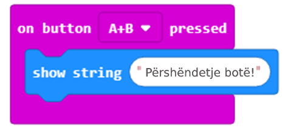</a>
<p>Zgjidhni përgjigjen e saktë.</p>

            <li data-component="answer" data-correct id="L5P1_opt_a">Kur përdoruesi shtyp butonin A+B, nëpër diodat LED në ekranin e Micro:bit-it lëviz teksti “Përshëndetje botë!”</li><li data-component="feedback" id="L5P1_opt_a">Ju lumtë! Përgjigja juaj është e saktë.</li>
            
            <li data-component="answer"  id="L5P1_opt_b">Kur përdoruesi shkund Micro:bit-in, nëpër diodat LED në ekran lëviz teksti “Përshëndetje botë!”.</li><li data-component="feedback" id="L5P1_opt_b">Përgjigja juaj nuk është e saktë. Provoni përsëri!</li>
            
            <li data-component="answer"  id="L5P1_opt_c">Kur përdoruesi shtyp butonin A+B, nëpër diodat LED në ekran lëviz teksti “Përshëndetje botë!”</li><li data-component="feedback" id="L5P1_opt_c">Përgjigja juaj nuk është e saktë. Provoni përsëri!</li>
            
            <li data-component="answer"  id="L5P1_opt_d">Nuk do të shfaqet asgjë.</li><li data-component="feedback" id="L5P1_opt_d">Përgjigja juaj nuk është e saktë. Provoni përsëri!</li>
            

            </ul>
            </div>
            
            <div class="course-box course-box-question course-content">
            <ul data-component="multiplechoice" data-multipleanswers="false"  id="L5P2">
            <p>Q-38: Çfarë do të shfaqet në Micro:bit pas zbatimit të kodit të paraqitur poshtë:</p>
<a class="reference internal image-reference" href="_images/103.png">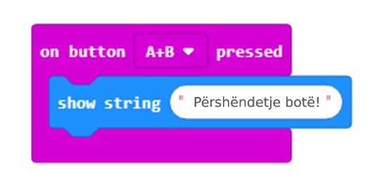</a>
<p>Zgjidhni përgjigjen e saktë.</p>

            <li data-component="answer"  id="L5P2_opt_a">Kur përdoruesi shtyp butonin A+B, nëpër diodat LED në ekranin e Micro:bit-it lëviz teksti “Përshëndetje botë!”</li><li data-component="feedback" id="L5P2_opt_a">Përgjigja juaj nuk është e saktë. Provoni përsëri!</li>
            
            <li data-component="answer"  id="L5P2_opt_b">Kur përdoruesi shtyp butonin A+B, nëpër diodat LED në ekran lëviz teksti “Përshëndetje botë!”</li><li data-component="feedback" id="L5P2_opt_b">Përgjigja juaj nuk është e saktë. Provoni përsëri!</li>
            
            <li data-component="answer"  id="L5P2_opt_c">. Kur përdoruesi shtyp butonin A+B, nëpër diodat LED në ekran lëviz teksti “Përshëndetje botë!”</li><li data-component="feedback" id="L5P2_opt_c">Përgjigja juaj nuk është e saktë. Provoni përsëri!</li>
            
            <li data-component="answer" data-correct id="L5P2_opt_d">Nuk do të shfaqet asgjë.</li><li data-component="feedback" id="L5P2_opt_d">Ju lumtë! Përgjigja juaj është e saktë.</li>
            

            </ul>
            </div>
            
            <div class="course-box course-box-question course-content">
            <ul data-component="multiplechoice" data-multipleanswers="false"  id="L5P3">
            <p>Q-39: Çfarë do të shfaqet në Micro:bit pas zbatimit të kodit të paraqitur poshtë:</p>
<a class="reference internal image-reference" href="_images/104.png">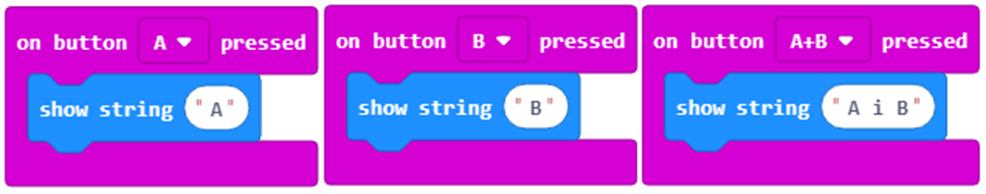</a>
<p>Zgjidhni përgjigjen e saktë.</p>

            <li data-component="answer" data-correct id="L5P3_opt_a">Në ekran shfaqet butoni që është shtypur: A, B ose të dy në të njëjtën kohë.</li><li data-component="feedback" id="L5P3_opt_a">Ju lumtë! Përgjigja juaj është e saktë.</li>
            
            <li data-component="answer"  id="L5P3_opt_b">Në ekran shfaqen A dhe B me renditje të rastësishme.</li><li data-component="feedback" id="L5P3_opt_b">Përgjigja juaj nuk është e saktë. Provoni përsëri!</li>
            
            <li data-component="answer"  id="L5P3_opt_c">shfaqet shkronja А e pastaj shkronja B.</li><li data-component="feedback" id="L5P3_opt_c">Përgjigja juaj nuk është e saktë. Provoni përsëri!</li>
            
            <li data-component="answer"  id="L5P3_opt_d">Nuk do të shfaqet asgjë.</li><li data-component="feedback" id="L5P3_opt_d">Përgjigja juaj nuk është e saktë. Provoni përsëri!</li>
            

            </ul>
            </div>
            </div>
</div>


  
      <div class="col-md-12">
<ul class="pager">
        <li id="relations-prev" title='Previous chapter - Mësimi 4 –Ushtrimorja' data-toggle="tooltip"><a href="Mësimi 4 –Ushtrimorja.html">Previous chapter</a></li>
    
        <li id="relations-next" title='Next chapter - Mësimi 6 –Kontrolli i diodave LED të ekranit' data-toggle="tooltip"><a href="Mësimi 6 –Kontrolli i diodave LED të ekranit.html">Next chapter</a></li>
</ul>

<!-- <ul class="pager"> -->
    <!-- -->
        <!-- <li id="relations-prev" title='Претходно поглавље - Mësimi 4 –Ushtrimorja' data-toggle="tooltip"><a href="Mësimi 4 –Ushtrimorja.html">Претходно поглавље</a></li> -->
    <!--  -->
    <!-- -->
        <!-- <li id="relations-next" title='Следеће поглавље - Mësimi 6 –Kontrolli i diodave LED të ekranit' data-toggle="tooltip"><a href="Mësimi 6 –Kontrolli i diodave LED të ekranit.html">Следеће поглавље</a></li> -->
    <!-- -->
<!-- </ul> -->

<script type="text/javascript">

  $('#relations-prev').tooltip({'placement':'right', 'selector': '', 'delay': { show: 100, hide: 50}});
  $('#relations-next').tooltip({'placement':'left', 'selector': '', 'delay': { show: 100, hide: 50}});

</script>
</div>
  
</div>
<footer class="footer col-md-12">
    <div class="container">
        <div class="text-center">
            <hr>
            <p class="text-muted">
                <span class="pull-left">&copy; 2019 Petlja (Created using  <a href="https://pypi.org/project/Sphinx/">Swinx</a>, <a href="http://runestoneinteractive.org/">RunestoneComponents</a> and <a href="https://github.com/Petlja/PetljaDoc">PetljaDoc</a>)</span>
            </p>
        </div>
    </div>
</footer>


<script type="text/javascript">
  var _gaq = _gaq || [];
  _gaq.push(['_setAccount', 'UA-32029811-1']);
  _gaq.push(['_trackPageview']);

  (function() {
    var ga = document.createElement('script'); ga.type = 'text/javascript'; ga.async = true;
    ga.src = ('https:' == document.location.protocol ? 'https://ssl' : 'http://www') + '.google-analytics.com/ga.js';
    var s = document.getElementsByTagName('script')[0]; s.parentNode.insertBefore(ga, s);
  })();
</script>


  </body>
</html>